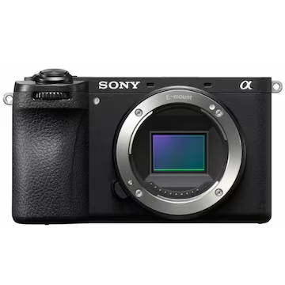
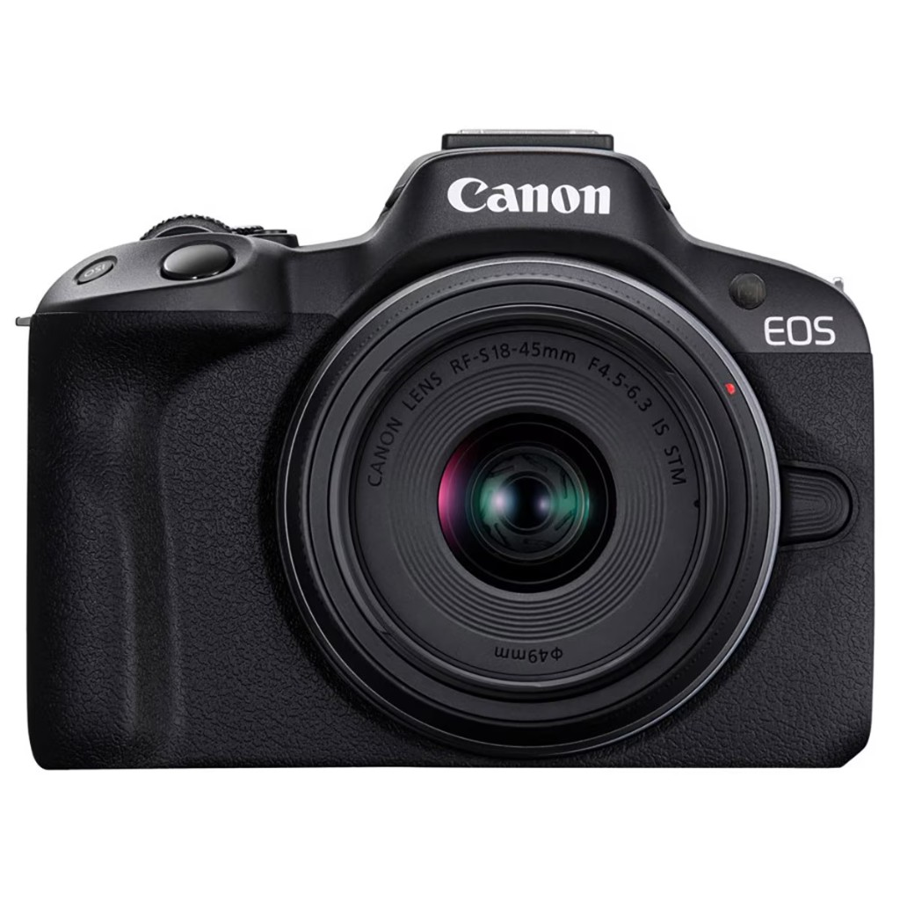
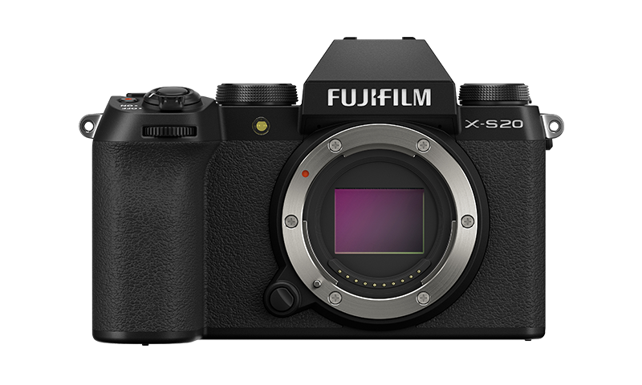
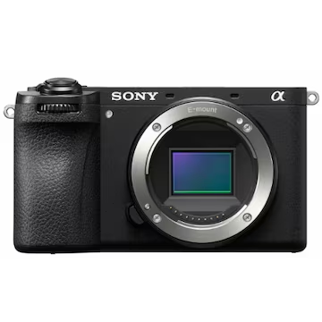
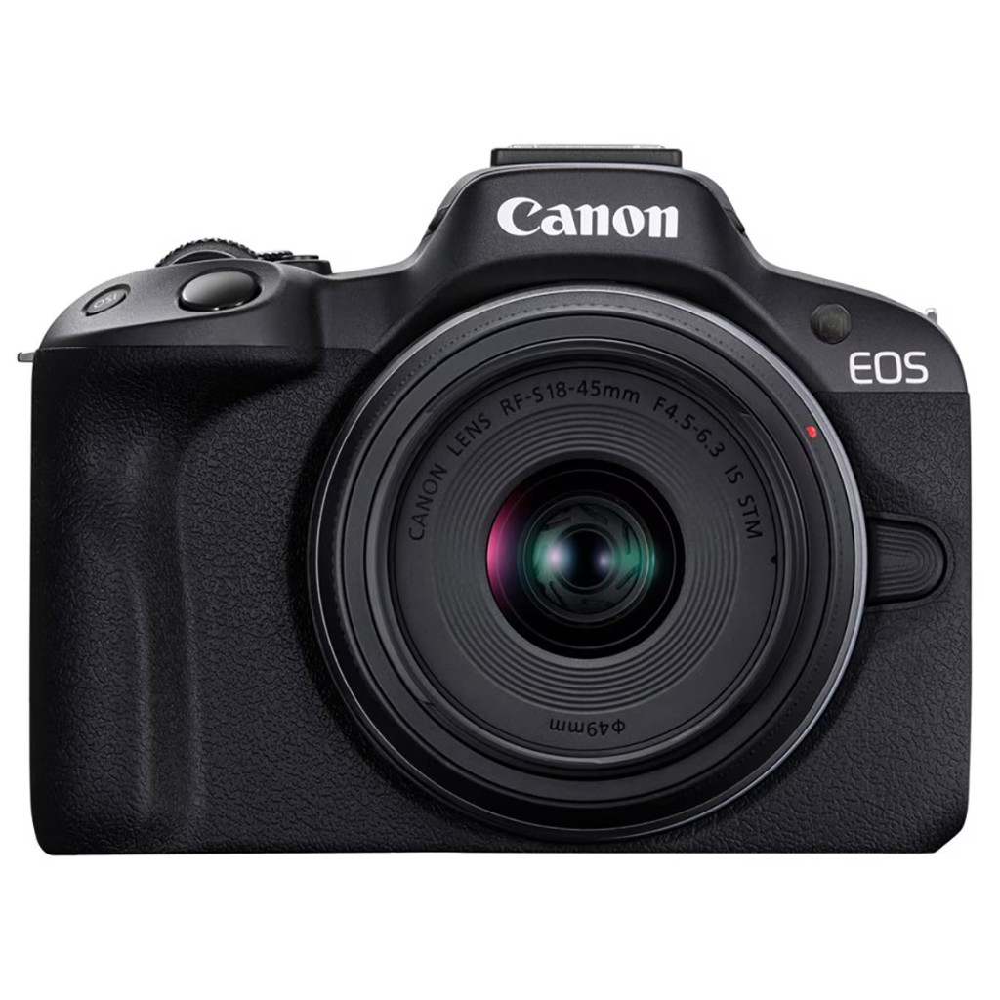
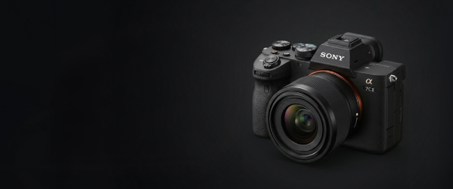
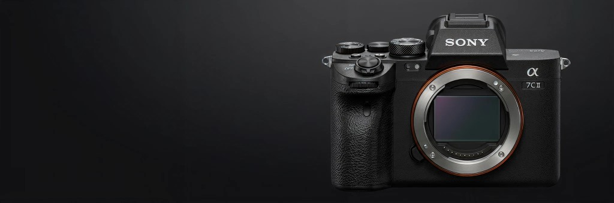

추천 결과 요약
최근 AI 추천
Sony A7C II + FE 35mm F1.8
최근 체크리스트 추천
Fujifilm X-S20 + XF 23mm F2
추천 이유 키워드
휴대성 / 인물 표현 / 야간 저노이즈 / 빠른 AF
최근 활동 로그
내 추천 상세
최근 AI 추천 결과와 체크리스트 기반 결과를 모아봤어요.

Sony A6700
APS-C / 빠른 AF / 4K 60p
Fujifilm X-S20
필름 시뮬레이션 / 경량 바디

Canon EOS R50
입문 최적 / 쉬운 조작
북마크
마음에 드는 카메라를 북마크해 두고, 시세 알림·비교까지 한곳에서 이어서 볼 수 있어요.

Fujifilm X-S20
북마크 · 색감 표현 우수

Sony A6700
최근 본 카메라 · 추적 AF 강점

Canon EOS R50
비교 중 · 입문 영상용

Sony A7C II
시세 알림 설정 · 170만원 이하
아카이브 나만 보기
여기에 올린 사진·무드보드·레퍼런스는 본인만 볼 수 있는 비공개 공간이에요. 커뮤니티에 올리기 전까지 다른 사람에게는 보이지 않아요.

#도심야경 #저노이즈 #A7C2

#스냅 #필름무드 #X100VI

#브이로그 #경량장비 #EOSR50
커뮤니티 전체 공개
아카이브에 모아 둔 내용 중 공개로 전환한 항목이 여기 게시글로 올라가요. 일반 글·댓글·저장·좋아요 활동도 함께 모여 보여요.
- 아카이브에서 공개: “야간 스냅 샘플 (A7C II)”
- 내가 쓴 글: “여행용 카메라 추천 부탁드려요”
- 최근 댓글: “X-S20 색감이 정말 예쁘네요!”
- 저장한 게시글: 14개
- 좋아요한 후기: 29개
- 최근 활동 요약: 이번 주 활동 11회